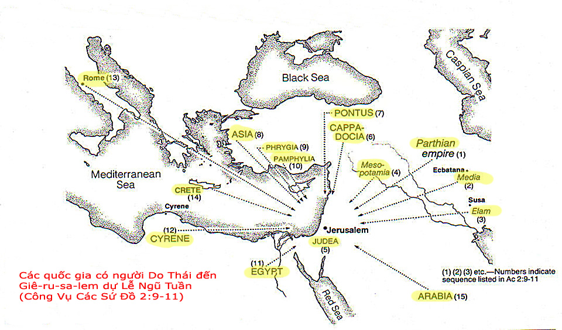

Ân Tứ Nói Tiếng Lạ (Bài 1)
Trần Đình Tâm
Dẫn nhập.
Trong số các ân tứ Đức Thánh Linh ban cho các tín hữu được liệt kê trong I Cô-rinh-tô 12:8-10; 28-30; Ê-phê-sô 4:11; Rô-ma 12:6-8, thì ân tứ nói tiếng lạ gây nhiều thắc mắc, nhiều tranh luận, nhiều ngộ nhận, nhiều bất hòa nhất và đã đưa đến tình trạng chia rẽ trong Hội Thánh. Điều nầy thật trái ngược với mục đích của các ân tứ, vì Đức Thánh Linh ban các ân tứ cho tín hữu là để gây dựng cho nhau, giúp ích cho nhau, đem đến sự hiệp một chứ không phải đem đến sự chia rẽ!
Điều quan trọng hơn hết là cần tìm hiểu xem Kinh Thánh dạy gì về ân tứ nói tiếng lạ. Nhưng đáng tiếc là ngày hôm nay có nhiều tài liệu, nhiều bài giảng, nhiều bài làm chứng về ân tứ nầy lại được trình bày dựa trên kinh nghiệm chủ quan hơn là căn cứ trên Lời của Đức Chúa Trời, nếu có thì chỉ dẫn chứng những phần Kinh Thánh nào ủng hộ cho quan điểm của mình và né tránh những phần Kinh Thánh khác không thuận lợi cho lý giải của mình. Do đó, Lời của Đức Chúa Trời đã không được rao giảng một cách ngay thẳng và trọn vẹn.
1. “Tiếng lạ” theo nguyên ngữ Hy-lạp:
“Tiếng lạ” theo nguyên ngữ Hy-lạp là “glossā”, từ nầy mang nhiều ý nghĩa khác nhau. Để xác định đúng ý nghĩa của nó, chúng ta không nên chỉ dựa vào định nghĩa của từ ngữ đó trong tự điển, nhưng quan trong hơn cả là nghiên cứu văn mạch của từ ngữ đó. Dựa vào văn mạch hay ngữ cảnh (context) là cách tốt nhất để hiểu đúng ý nghĩa của từ ngữ mà Kinh Thánh muốn nói.
“Glossā” có 4 ý nghĩa sau đây:
a. Glossā có nghĩa là cái lưỡi. Đây là nghĩa đen (literal), là nghĩa đơn giản nhất, chỉ về một bộ phận trong cơ thể con người có nhiệm vụ phát âm. Nghĩa nầy được dùng trong các câu sau:
“Đức Giê-hô-va phán cùng Ghê-đê-ôn rằng: Phàm kẻ nào dùng lưỡi (Glossā) liếm nước như chó, và kẻ nào quỳ gối xuống mà uống thì ngươi phải để riêng ra.” (Các Quan Xét 7:5)
“Ngài đem riêng người ra, cách xa đám đông, rồi để ngón tay vào lỗ tai người, và thấm nước miếng xức lưỡi (Glossā) người.” (Mác 7:33)
b. Glossā còn chỉ về chức năng của lưỡi, tức là lời nói hay ngôn ngữ phát ra từ môi miệng con người. Nghĩa nầy được thấy trong các câu sau:
“Hỡi các con cái bé mọn, chớ yêu mến bằng lời nói và lưỡi (Glossā), nhưng bằng việc làm và lẽ thật.” (I Giăng 3:18)
“Và mọi lưỡi (Glossā) thảy đều xưng Jesus Christ là Chúa…” (Phi-líp 2:11)
“Bởi cái lưỡi (Glossā) chúng ta ngợi khen Chúa, Cha chúng ta, và cũng bởi nó chúng ta rủa sả loài người, là loài tạo theo hình ảnh Đức Chúa Trời.” (Gia-cơ 3:9)
c. Glossā cũng có nghĩa là tiếng ngoại quốc, là ngôn ngữ của một dân tộc nào đó trên thế giới, được dùng để phân biệt với ngôn ngữ bản xứ. Nghĩa nầy được dùng trong các câu Kinh Thánh sau:
“Sự ấy đoạn, tôi nhìn xem, thấy vô số người, không ai đếm được, bởi mọi nước, mọi chi phái, mọi dân tộc, mọi tiếng (Glossā) mà ra; chúng đứng trước ngôi và trước Chiên Con.” (Khải Huyền 7:9)
“Hết thảy đều được đầy dẫy Đức Thánh Linh, khởi sự nói các thứ tiếng khác (Glossā), theo như Đức Thánh Linh cho mình nói.” (Công Vụ Các Sứ Đồ 2:4)
d. Glossā còn dùng để chỉ một loại ngôn ngữ đặc biệt, không thuộc về bất cứ một ngôn ngữ nào của con người trên thế giới. Bản Kinh Thánh Việt Ngữ dịch là "nói tiếng lạ", ngôn ngữ nầy là ngôn ngữ thuộc linh, đây là một ân tứ do Đức Thánh Linh ban cho tín hữu trong Hội Thánh. Ý nghĩa nầy được thấy trong các câu sau:
“Vì người nào nói tiếng lạ (Glossā), thì không phải nói với người ta, bèn là với Đức Chúa Trời.” (I Cô-rinh-tô 14:2)
“Cả thảy đều được ơn chữa bịnh sao? Cả thảy đều nói tiếng lạ (Glossā) sao? Cả thảy đều thông giải tiếng lạ sao?” (I Cô-rinh-tô 12:30)
Chúng ta thấy “Glossā” có nhiều nghĩa khác nhau, chúng tôi chỉ chú ý đến 2 ý nghĩa sau cùng mà thôi, vốn là vấn đề gây nhiều tranh luận hơn hết. Bài viết nầy chỉ xin trình bày ý nghĩa thứ ba, liên quan đến "tiếng ngoại quốc". Còn ý nghĩa sau cùng, liên quan đến "nói tiếng lạ" sẽ trình bày trong bài viết thứ 2.
2. Glossā trong sách Công Vụ Các Sứ Đồ: Tiếng ngoại quốc.
Trong sách Công Vụ Các Sứ Đồ, có tất cả 3 lần “Glossā” được dùng đến: 2:4; 10:46 và 19:6. Chúng ta hãy khảo sát cả 3 trường hợp:
a. Công Vụ Các Sứ Đồ 2:4:
“Hết thảy đều được đầy dẫy Đức Thánh Linh, khởi sự nói các thứ tiếng khác (Glossā), theo như Đức Thánh Linh cho mình nói.”
Trong ngày Lễ Ngũ Tuần, có nhiều người Do Thái mộ đạo sinh sống từ 15 vùng lân cận với Israel (Xin xem bản đồ trình bày 15 quốc gia có người Do Thái đi dự Lễ Ngũ Tuần) họ đến thành Giê-ru-sa-lem để dự lễ. Khi Đức Thánh Linh được ban xuống, các môn đồ được đầy dẫy Thánh Linh, khởi sự nói bằng Glossā. Câu 6 và 12 cho chúng ta biết những người đến từ 15 nước lân cận rất kinh ngạc khi thấy các môn đồ nói được ngôn ngữ bản xứ của họ. Từ đó chúng ta dễ dàng kết luận rằng các môn đồ được Đức Thánh Linh ban cho khả năng nói tiếng ngoại quốc.

Mục đích của ân tứ nói tiếng ngoại quốc trong ngày lễ Ngũ tuần là ca tụng Đức Chúa Trời, và sau đó là công bố Tin Lành cứu rỗi:
+ Các môn đồ nói về những sự cao trọng của Đức Chúa Trời:
“Chúng ta đều nghe họ lấy tiếng chúng ta mà nói những sự cao trọng của Đức Chúa Trời.” (2:11)
+ Phi-e-rơ có cơ hội rao giảng sự cứu rỗi trong Chúa Jesus cho những người Do Thái đang đi dự lễ Ngũ Tuần tại Giê-ru-sa-lem:
“Vậy, cả nhà Y-sơ-ra-ên khá biết chắc rằng Đức Chúa Trời đã tôn Jesus nầy, mà các ngươi đã đóng đinh trên thập tự giá, làm Chúa và Đấng Christ.” (2:36)
Kết quả có ba ngàn người được cứu trong ngày đó.
Có một số nhà giải kinh cho rằng các môn đồ không nói tiếng ngoại quốc, họ chỉ nói ngôn ngữ thông thường của họ mà thôi (tiếng A-ram), nhưng những người đi dự lễ từ 15 vùng lân cận khi nghe các môn đồ nói, thì nghe thành tiếng bản xứ của họ. Quan điểm nầy khó có thể chấp nhận được vì lý do sau:
+ Đoạn 2, câu 4 xác định rất rõ ràng chính các môn đồ nói các thứ tiếng khác, theo như Đức Thánh linh cho mình nói.
+ Đức Thánh Linh ban cho các môn đồ khi xưa cũng như tín hữu ngày nay ân tứ nói, chứ không phải ân tứ nghe. Không có chổ nào trong Tân Ước cho chúng ta thấy Đức Thánh Linh ban cho ân tứ nghe.
Như vậy, bởi Đức Thánh Linh ban cho, các môn đồ có khả năng nói được những ngoại ngữ mà trước đó họ chưa từng học. Ngày nay, chúng ta nhờ học tập và rèn luyện mà nói được một ngoại ngữ nào đó thì đó không phải là ân tứ nói ngoại ngữ, gọi là ân tứ chỉ khi đó là sự ban cho của Đức Thánh Linh đi kèm với mục đích gây dựng Hội Thánh.
b. Công Vụ Các Sứ Đồ 10:46:
“Vì các tín đồ đó nghe họ nói tiếng ngoại quốc (Glossā) và ngợi khen Đức Chúa Trời.”
Đọc trọn đoạn 10 sẽ thấy “các tín đồ đó” gồm sứ đồ Phi-e-rơ và một số người nữa cùng đi với ông, là những người Do Thái tin Chúa Jesus và đã từng trãi sự nhận lãnh Đức Thánh Linh trong ngày Lễ Ngũ Tuần. “Họ” chỉ về đội trưởng Cọt-nây cùng với những người trong gia đình hoặc bạn bè của ông, họ họp lại trong nhà Cọt-nây để nghe Phi-e-rơ rao giảng Tin Lành.
Khi Phi-e-rơ đang làm chứng về Tin Lành cho họ thì Đức Thánh Linh giáng xuống, họ nói Glossā và ngợi khen Đức Chúa Trời. Điều đặc biệt trong trường hợp nầy, khác với Công Vụ Các Sứ Đồ 2:4 là: Những người nói Glossā ở đây là những người ngoại bang, họ là những người thuộc trong gia đình đội trưởng Cọt-nây.
Điểm quan trọng ở đây, không phải là vấn đề những người nầy nói Glossā nhưng là sự kiện Đức Thánh Linh cũng được ban cho những người ngoại bang, vì câu 45 nói: “Các tín đồ đã chịu phép cắt bì, là những kẻ đồng đến với Phi-e-rơ, đều lấy làm lạ, vì thấy sự ban cho Đức Thánh Linh cũng đổ ra trên người ngoại nữa.”
Câu hỏi nêu ra: Glossā mà những người ngoại bang dùng có nghĩa gì? Dựa vào câu 47 “Phi-e-rơ cất tiếng nói rằng: Người ta có thể từ chối nước về phép báp-têm cho những kẻ đã nhận lấy Đức Thánh Linh cũng như chúng ta chăng?” sẽ thấy Phi-e-rơ chứng kiến người ngoại bang nói Glossā khi nhận lãnh Đức Thánh Linh cũng giống như kinh nghiệm mà ông đã nói Glossā khi nhận lãnh Đức Thánh Linh trong ngày Lễ Ngũ Tuần. Vậy, những người ngoại bang cũng được ban cho ân tứ nói tiếng ngoại quốc
Bài học cho chúng ta trong trường hợp trên đây là: Ân tứ nói ngoại ngữ như là một dấu hiệu cho những người Do Thái biết rằng, bất cứ ai tiếp nhận ơn cứu rỗi bởi Chúa Jesus, cũng được nhận lãnh Đức Thánh Linh, chứ không chỉ dành riêng cho dân Do Thái.
c. Công Vụ Các Sứ Đồ 19:6:
“Sau khi Phao-lô đã đặt tay lên, thì có Đức Thánh Linh giáng trên chúng, cho nói tiếng ngoại quốc (Glossā) và lời tiên tri.”
Câu chuyện xãy ra tại thành Ê-phê-sô, có khoảng 12 người (câu 7) đã chịu phép báp-têm của Giăng Báp-tít, họ chưa nhận được Đức Thánh Linh. Phao-lô giải thích cho họ biết phép Báp-têm của Giăng chỉ để ăn năn tội, và dọn lòng mình để tiếp nhận Chúa Jesus là Đấng đến sau, chỉ khi nào tin tiếp nhận Chúa Jesus, mới được từng trãi sự nhận lãnh Đức Thánh Linh. Sau khi nghe Phao-lô giảng giải, họ đồng ý chịu phép báp-têm nhân danh Đức Chúa Jesus (biểu lộ sự tiếp nhận Chúa Jesus), và khi Phao-lô đặt tay thì họ nói Glossā.
Thật khó mà xác định được Glossā trong câu chuyện trên (19:1-7) có phải chỉ về tiếng ngoại quốc hay không, tuy nhiên, nếu căn cứ vào diễn biến tự nhiên của câu chuyện thì có thể mạnh dạn kết luận rằng trường hợp nói Glossā ở đây cũng tương tự như hai trường hợp trước, tức là họ nói tiếng ngoại quốc. Ân tứ nói ngoại ngữ trong trường hợp nầy như là một sự kiện xác nhận sự giảng giải của Phao-lô là đúng.
Tóm lại, cả 3 trường hợp trong sách Công Vụ Các Sứ Đồ đều nói tiếng ngoại quốc, bản dịch Kinh Thánh Việt ngữ truyền thống dịch “Glossā”, là tiếng Hy-lạp sang “tiếng ngoại quốc” là chính xác.
3. Lời tuyên phán của của Chúa Jesus về ân tứ nói ngoại ngữ:
Sau khi Chúa Jesus sống lại và trước khi Ngài thăng thiên, Chúa Jesus phán dạy các sứ đồ như sau:
“Hãy đi khắp thế gian, giảng Tin lành cho mọi người. Vậy, những kẻ tin sẽ được các dấu lạ nầy: Lấy danh Ta mà trừ quỷ; dùng tiếng mới (Glossā) mà nói; bắt rắn trong tay; nếu uống giống chi độc, cũng chẳng hại gì; hễ đặt tay trên kẻ đau, thì kẻ đau sẽ lành.” (Mác 16:15,17-18)
Từ ngữ Glossā trong lời phán của Chúa Jesus được dịch là “tiếng mới” (bản dịch truyền thống), là một trong 5 dấu (sign) kèm theo cho những ai tin nhận Tin Lành. Nếu đem “tiếng mới” ở đây đối chiếu với các trường hợp nói tiếng ngoại quốc trong sách Công Vụ Các Sứ Đồ nêu trên, là sách tường thuật về công cuộc truyền bá Tin Lành của Chúa Jesus, thì chúng ta có thể kết luận rằng “tiếng mới” nầy cũng chính là tiếng ngoại quốc. Như vậy, lời tuyên bố của Chúa Jesus về sự kiện người tin nhận Tin Lành sẽ nhận được ân tứ nói ngoại ngữ thật đã xãy ra.
Có người giảng giải rằng “dùng tiếng mới mà nói” không có ý nói về “nói tiếng lạ” hay “nói ngoại ngữ”, nhưng ám chỉ những người khi tin Chúa, được Đức Thánh Linh tái sinh, bước vào đời sống mới thay cho đời sống cũ, người ấy chỉ nói những gì phù hợp với nếp sống mới trong Chúa mà thôi. Sự giải thích như vậy có thể phù hợp với tiêu chuẩn sống đạo đức mà Kinh Thánh dạy dỗ, nhưng lại không đúng với ý nghĩa thật sự trong lời phán của Chúa, vì xét theo nguyên ngữ Hy-lạp, Glossā không mang ý nghĩa “nói những gì tốt đẹp, ích lợi” hay “nói những gì đẹp lòng Chúa”.
[Đón đọc bài “Ân Tứ Nói Tiếng Lạ”, bài 2]
Tháng 4, năm 2011